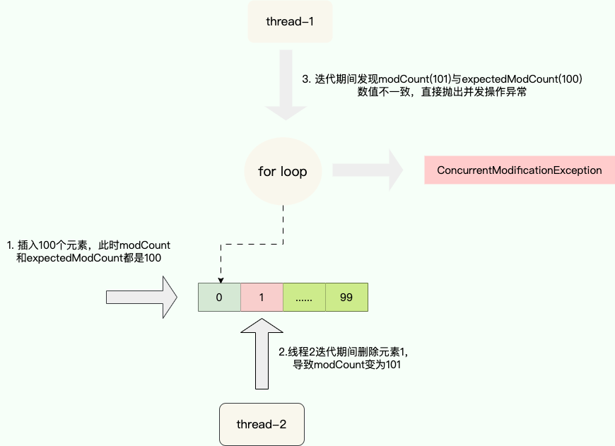
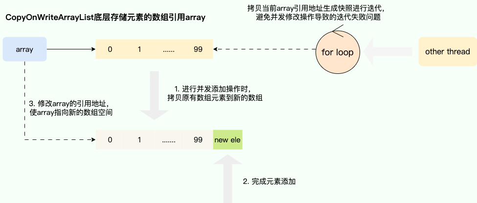
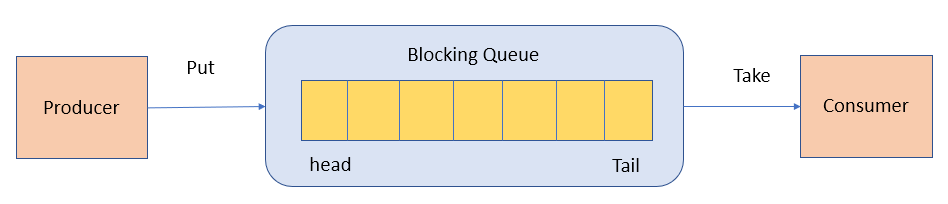

2025年java学习笔记——集合部分
概览
集合又叫容器
Collection接口，主要用于存放单一元素：List、Set 、 Queue
Map 接口，主要用于存放键值对

List(对付顺序的好帮手): 存储的元素是有序的、可重复的。Set(注重独一无二的性质): 存储的元素不可重复的。Queue(实现排队功能的叫号机): 按特定的排队规则来确定先后顺序，存储的元素是有序的、可重复的。Map(用 key 来搜索的专家): 使用键值对（key-value）存储，类似于数学上的函数 y=f(x)，”x” 代表 key，”y” 代表 value，key 是无序的、不可重复的，value 是无序的、可重复的，每个键最多映射到一个值。
List
ArrayList
Vector
LinkedList JDK6之前是循环列表，现在是双向链表
Set
HashSet(无序，唯一): 基于 HashMap 实现的，底层采用 HashMap 来保存元素。
LinkedHashSet: LinkedHashSet 是 HashSet 的子类，并且其内部是通过 LinkedHashMap 来实现的。
TreeSet(有序，唯一): 红黑树(自平衡的排序二叉树)。
Queue
PriorityQueue: Object[] 数组来实现小顶堆
DelayQueue:PriorityQueue
ArrayDeque: 可扩容动态双向数组
Map
HashMap：JDK1.8 之前 HashMap 由数组+链表组成的，数组是 HashMap 的主体，链表则是主要为了解决哈希冲突而存在的（“拉链法”解决冲突）。JDK1.8 以后在解决哈希冲突时有了较大的变化，当链表长度大于阈值（默认为 8）（将链表转换成红黑树前会判断，如果当前数组的长度小于 64，那么会选择先进行数组扩容，而不是转换为红黑树）时，将链表转化为红黑树，以减少搜索时间。
LinkedHashMap：LinkedHashMap 继承自 HashMap，所以它的底层仍然是基于拉链式散列结构即由数组和链表或红黑树组成。另外，LinkedHashMap 在上面结构的基础上，增加了一条双向链表，使得上面的结构可以保持键值对的插入顺序。同时通过对链表进行相应的操作，实现了访问顺序相关逻辑。
Hashtable：数组+链表组成的，数组是Hashtable 的主体，链表则是主要为了解决哈希冲突而存在的。
TreeMap：红黑树（自平衡的排序二叉树）。
键值对——Map 需要排序：TreeMap 不需要排序：HashMap 保证线程安全就选用
ConcurrentHashMap只需要存放元素值时，就选择实现
Collection接口的集合，需要保证元素唯一时选择实现Set接口的集合比如TreeSet或HashSet，不需要就选择实现List接口的比如ArrayList或LinkedList集合大小可变、支持泛型、具有内建算法，灵活性高，适合现代软件开发多样化数据
List
ArrayList 和 Array（数组）的区别？
ArrayList 内部基于动态数组实现，比 Array（静态数组） 使用起来更加灵活
ArrayList会根据实际存储的元素动态地扩容或缩容，而Array被创建之后就不能改变它的长度了。ArrayList允许你使用泛型来确保类型安全，Array则不可以。ArrayList中只能存储对象。对于基本类型数据，需要使用其对应的包装类（如 Integer、Double 等）。Array可以直接存储基本类型数据，也可以存储对象。ArrayList支持插入、删除、遍历等常见操作，并且提供了丰富的 API 操作方法，比如add()、remove()等。Array只是一个固定长度的数组，只能按照下标访问其中的元素，不具备动态添加、删除元素的能力。ArrayList创建时不需要指定大小，而Array创建时必须指定大小。
ArrayList 和 Vector 的区别?（了解即可）
ArrayList是List的主要实现类，底层使用Object[]存储，适用于频繁的查找工作，线程不安全 。Vector是List的古老实现类，底层使用Object[]存储，线程安全。
Vector 和 Stack 的区别?（了解即可）
Vector和Stack两者都是线程安全的，都是使用synchronized关键字进行同步处理。Stack继承自Vector，是一个后进先出的栈，而Vector是一个列表。Vector和Stack已经被淘汰，推荐使用并发集合类（例如ConcurrentHashMap、CopyOnWriteArrayList等）或者手动实现线程安全的方法来提供安全的多线程操作支持。
ArrayList 可以添加 null 值吗？
ArrayList 中可以存储任何类型的对象，包括 null 值。不过，不建议向ArrayList 中添加 null 值， null 值无意义，会让代码难以维护比如忘记做判空处理就会导致空指针异常。
ArrayList 插入和删除元素的时间复杂度？
插入/删除：
头：O(n)
尾：O(1)
指定位置：O(n)
LinkedList 插入和删除元素的时间复杂度？
头：O(1)
尾：O(1)
指定位置：O(n)
LinkedList 为什么不能实现 RandomAccess 接口？
RandomAccess 是一个标记接口，用来表明实现该接口的类支持随机访问（即可以通过索引快速访问元素）。由于 LinkedList 底层数据结构是链表，内存地址不连续，只能通过指针来定位，不支持随机快速访问，所以不能实现 RandomAccess 接口。
ArrayList 与 LinkedList 区别?
是否保证线程安全：
ArrayList和LinkedList都是不同步的，也就是不保证线程安全；底层数据结构：
ArrayList底层使用的是Object数组；LinkedList底层使用的是 双向链表 数据结构（JDK1.6 之前为循环链表，JDK1.7 取消了循环。）插入和删除是否受元素位置的影响：
ArrayList
头：O(n)
尾：O(1)
指定位置：O(n)
LinkedList:
头：O(1)
尾：O(1)
指定位置：O(n)
是否支持快速随机访问：
LinkedList不支持高效的随机元素访问，而ArrayList（实现了RandomAccess接口） 支持。快速随机访问就是通过元素的序号快速获取元素对象(对应于get(int index)方法)。内存空间占用：
ArrayList的空间浪费主要体现在在 list 列表的结尾会预留一定的容量空间，而 LinkedList 的空间花费则体现在它的每一个元素都需要消耗比 ArrayList 更多的空间（因为要存放直接后继和直接前驱以及数据）。
说说集合中的 fail-fast 和 fail-safe 是什么
快速失败的思想即针对可能发生的异常进行提前表明故障并停止运行，通过尽早的发现和停止错误，降低故障系统级联的风险。
在java.util包下的大部分集合是不支持线程安全的，为了能够提前发现并发操作导致线程安全风险，提出通过维护一个modCount记录修改的次数，迭代期间通过比对预期修改次数expectedModCount和modCount是否一致来判断是否存在并发操作，从而实现快速失败，由此保证在避免在异常时执行非必要的复杂代码。

for循环底层迭代器获取下一个元素时的next方法，可以看到其内部的checkForComodification具有针对修改次数比对的逻辑：
1 | public E next() { |
fail-safe也就是安全失败的含义，它旨在即使面对意外情况也能恢复并继续运行，这使得它特别适用于不确定或者不稳定的环境
这个思想常运用于并发容器，最经典的实现就是CopyOnWriteArrayList的实现，通过写时复制的思想保证在进行修改操作时复制出一份快照，基于这份快照完成添加或者删除操作后，将CopyOnWriteArrayList底层的数组引用指向这个新的数组空间，由此避免迭代时被并发修改所干扰所导致并发操作安全问题，当然这种做法也存缺点即进行遍历操作时无法获得实时结果：

CopyOnWriteArrayList实现fail-safe的核心代码，可以看到它的实现就是通过getArray获取数组引用然后通过Arrays.copyOf得到一个数组的快照，基于这个快照完成添加操作后，修改底层array变量指向的引用地址由此完成写时复制：
1 | public boolean add(E e) { |
Set
Comparable 接口和 Comparator 接口都是 Java 中用于排序的接口，它们在实现类对象之间比较大小、排序等方面发挥了重要作用：
Comparable接口实际上是出自java.lang包 它有一个compareTo(Object obj)方法用来排序Comparator接口实际上是出自java.util包它有一个compare(Object obj1, Object obj2)方法用来排序
一般我们需要对一个集合使用自定义排序时，我们就要重写compareTo()方法或compare()方法，当我们需要对某一个集合实现两种排序方式，比如一个 song 对象中的歌名和歌手名分别采用一种排序方法的话，我们可以重写compareTo()方法和使用自制的Comparator方法或者以两个 Comparator 来实现歌名排序和歌星名排序，第二种代表我们只能使用两个参数版的 Collections.sort().
无序性和不可重复性的含义是什么
- 无序性不等于随机性 ，无序性是指存储的数据在底层数组中并非按照数组索引的顺序添加 ，而是根据数据的哈希值决定的。
- 不可重复性是指添加的元素按照
equals()判断时 ，返回 false，需要同时重写equals()方法和hashCode()方法。
比较 HashSet、LinkedHashSet 和 TreeSet 三者的异同
- 都是元素唯一，线程不安全的：
HashSet、LinkedHashSet和TreeSet都是Set接口的实现类，都能保证元素唯一，并且都不是线程安全的。 - 底层数据结构不同：
HashSet、LinkedHashSet和TreeSet的主要区别在于底层数据结构不同。HashSet的底层数据结构是哈希表（基于HashMap实现）。LinkedHashSet的底层数据结构是链表和哈希表，元素的插入和取出顺序满足 FIFO。TreeSet底层数据结构是红黑树，元素是有序的，排序的方式有自然排序和定制排序。 - 应用场景不同：底层数据结构不同又导致这三者的应用场景不同。
HashSet用于不需要保证元素插入和取出顺序的场景，LinkedHashSet用于保证元素的插入和取出顺序满足 FIFO 的场景，TreeSet用于支持对元素自定义排序规则的场景。
Queue
Queue 是单端队列，只能从一端插入元素，另一端删除元素，实现上一般遵循 先进先出（FIFO） 规则。
Queue 扩展了 Collection 的接口，根据 因为容量问题而导致操作失败后处理方式的不同 可以分为两类方法: 一种在操作失败后会抛出异常，另一种则会返回特殊值。
Queue 接口 |
抛出异常 | 返回特殊值 |
|---|---|---|
| 插入队尾 | add(E e) | offer(E e) |
| 删除队首 | remove() | poll() |
| 查询队首元素 | element() | peek() |
Deque 扩展了 Queue 的接口, 增加了在队首和队尾进行插入和删除的方法，同样根据失败后处理方式的不同分为两类：
Deque 接口 |
抛出异常 | 返回特殊值 |
|---|---|---|
| 插入队首 | addFirst(E e) | offerFirst(E e) |
| 插入队尾 | addLast(E e) | offerLast(E e) |
| 删除队首 | removeFirst() | pollFirst() |
| 删除队尾 | removeLast() | pollLast() |
| 查询队首元素 | getFirst() | peekFirst() |
| 查询队尾元素 | getLast() | peekLast() |
Deque 还提供有 push() 和 pop() 等其他方法，可用于模拟栈。
PriorityQueue
PriorityQueue 是在 JDK1.5 中被引入的, 其与 Queue 的区别在于元素出队顺序是与优先级相关的，即总是优先级最高的元素先出队。
这里列举其相关的一些要点：
PriorityQueue利用了二叉堆的数据结构来实现的，底层使用可变长的数组来存储数据PriorityQueue通过堆元素的上浮和下沉，实现了在 O(logn) 的时间复杂度内插入元素和删除堆顶元素。PriorityQueue是非线程安全的，且不支持存储NULL和non-comparable的对象。PriorityQueue默认是小顶堆，但可以接收一个Comparator作为构造参数，从而来自定义元素优先级的先后。
BlockingQueue
BlockingQueue （阻塞队列）是一个接口，继承自 Queue。BlockingQueue阻塞的原因是其支持当队列没有元素时一直阻塞，直到有元素；还支持如果队列已满，一直等到队列可以放入新元素时再放入。
1 | public interface BlockingQueue<E> extends Queue<E> { |
BlockingQueue 常用于生产者-消费者模型中，生产者线程会向队列中添加数据，而消费者线程会从队列中取出数据进行处理。

BlockingQueue 的实现类有哪些？
ArrayBlockingQueue：使用数组实现的有界阻塞队列。在创建时需要指定容量大小，并支持公平和非公平两种方式的锁访问机制。LinkedBlockingQueue：使用单向链表实现的可选有界阻塞队列。在创建时可以指定容量大小，如果不指定则默认为Integer.MAX_VALUE**。和ArrayBlockingQueue不同的是， 它仅支持非公平**的锁访问机制。PriorityBlockingQueue：支持优先级排序的无界阻塞队列。元素必须实现**Comparable接口或者在构造函数中传入Comparator对象，并且不能插入 null 元素**。SynchronousQueue：同步队列，是一种不存储元素的阻塞队列。每个插入操作都必须等待对应的删除操作，反之删除操作也必须等待插入操作。因此，SynchronousQueue通常用于线程之间的直接传递数据。DelayQueue：延迟队列，其中的元素只有到了其指定的延迟时间，才能够从队列中出队。……
ArrayBlockingQueue 和 LinkedBlockingQueue 有什么区别？
ArrayBlockingQueue 和 LinkedBlockingQueue 是 Java 并发包中常用的两种阻塞队列实现，它们都是线程安全的。不过，不过它们之间也存在下面这些区别：
- 底层实现：
ArrayBlockingQueue基于数组实现，而LinkedBlockingQueue基于链表实现。 - 是否有界：
ArrayBlockingQueue是有界队列，必须在创建时指定容量大小。LinkedBlockingQueue创建时可以不指定容量大小，默认是Integer.MAX_VALUE，也就是无界的。但也可以指定队列大小，从而成为有界的。 - 锁是否分离：
ArrayBlockingQueue中的锁是没有分离的，即生产和消费用的是同一个锁；LinkedBlockingQueue中的锁是分离的，即生产用的是putLock，消费是takeLock，这样可以防止生产者和消费者线程之间的锁争夺。 - 内存占用：
ArrayBlockingQueue需要提前分配数组内存，而LinkedBlockingQueue则是动态分配链表节点内存。这意味着，ArrayBlockingQueue在创建时就会占用一定的内存空间，且往往申请的内存比实际所用的内存更大，而LinkedBlockingQueue则是根据元素的增加而逐渐占用内存空间。